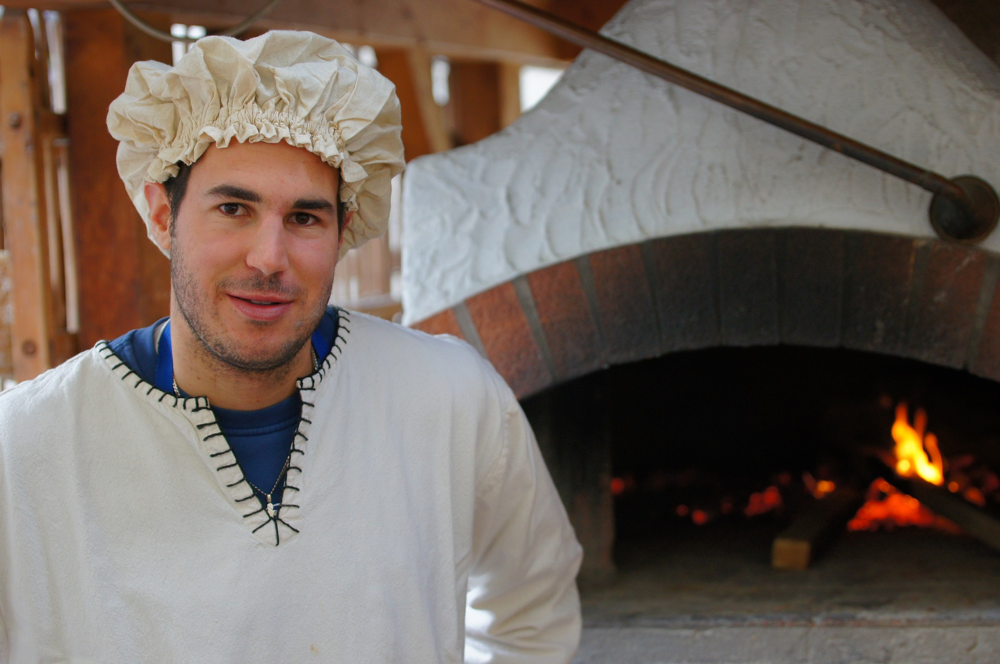

Über Uns
Unsere Gäste mit ausgezeichnetem Essen wie zu Hause in Italien und einem erstklassigen Service verwöhnen: das ist das Motto des Ristorante Nummero Uno in Zürich am See. Ihre Gastgeber sind Fabio Bauleo und Kimo Billeter.
Nachdem Fabio und Kimo beide die Lehre als Mediamatiker absolviert hatten, wollten sie ein neues Abenteuer in Angriff nehmen und gründeten das Restaurant Nummero Uno. Beide haben italienische Wurzeln und lieben es italienisches Essen zu verkosten und zubereiten. Seit 2017 steht der versierte Küchenchef Massimo Bottura am Herd. Mit seinem Team stellt er viele der exquisiten Genüsse von Hand her – von den Fonds bis zur Pasta. Geniessen, entspannen, sich wohl fühlen: Das Nummero Uno ist zu einem Lieblingsitaliener in der Stadt geworden. Wir freuen uns auf Ihren Besuch. Ihr Ristorante Nummero Uno.
Nachdem Fabio und Kimo beide die Lehre als Mediamatiker absolviert hatten, wollten sie ein neues Abenteuer in Angriff nehmen und gründeten das Restaurant Nummero Uno. Beide haben italienische Wurzeln und lieben es italienisches Essen zu verkosten und zubereiten. Seit 2017 steht der versierte Küchenchef Massimo Bottura am Herd. Mit seinem Team stellt er viele der exquisiten Genüsse von Hand her – von den Fonds bis zur Pasta. Geniessen, entspannen, sich wohl fühlen: Das Nummero Uno ist zu einem Lieblingsitaliener in der Stadt geworden. Wir freuen uns auf Ihren Besuch. Ihr Ristorante Nummero Uno.
